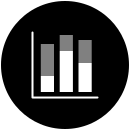
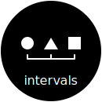
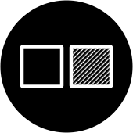
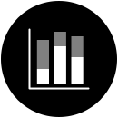
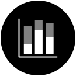
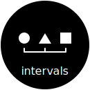
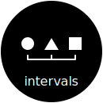
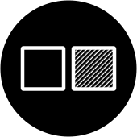
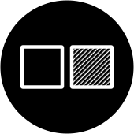

This document is a work in progress. Questions and feedback are welcome! Please send comments to styleguide@fizz.studio.
Select your chart types
Select a chart type
View guides for specific chart types, like line charts, bar charts, or dashboards
Pick a chart type. If you're mixing two or more chart types in the same chart (like a combined line and bar chart), select both.
line chart
bar chart
pie/donut chart
gauge
100% chart
scatterplot
table
Decide your chart type
Get help to decide which chart type best represents the data you have



Select filter options below to match aspects of your dataset
Single series versus multi-series
Give examples here, like single subject vs multiple subjects, or single student vs multiple students.
single series
multi-series
Level of measurement
Types of data
categorical
nominal
ordinal
numeric
interval
ratio
Task types
Give definitions and examples here, like comparison, time-series, etc.
trend over time
comparisons
benchmark
part to whole
proportions
relationships
hierarchy
distribution
patterns
range
Line
A line chart shows changes and trends over a sequence of values in a series. Line charts (or line graphs or line plots) use a series of line segments to connect individual record points over a series of changes, usually over time, where the position of each record represents the value. These record points are often represented by a symbol, such as a circle or square, and each series of data should use a different symbol, as well as a different color, to distinguish it from other series lines.
In a horizontal line chart (the most common), each record point's numerical value is measured in its height (the y axis), while its place in the sequence (e.g. the date or time) is shown in its horizontal position (the x axis). Rarely, in a vertical line chart, the axes would be reversed; this is unconventional, and should be avoided.
Each record and line segment is ordered. For a time series, each line segment is ordered chronologically.
Multiple categories can be shown, with each data line in the chart representing the records in the series for that category. Too many lines can obscure the data (see "spaghetti charts").
Best used for
Representing a trend in data over intervals of time (a time series), where each line segment is ordered chronologically
Accessibility considerations:
Favor direct labeling instead of legends
For line charts with more than one line, placing the series label end of the line, or sometimes along the line, reduces the cognitive load in associating each line with its category. Using legends with keys, rather than direct labeling, separates the representation (the line) from its referent, forcing the user to remember the color or symbol, or to actively refer back to the legend.
TODO Show illustration of direct labeling vs. legends.
Symbols: One way to differentiate lines in addition to color is to use a different symbol for each line, positioned at each data record point. Common symbols include circles, squares, triangles, diamonds, and crosses; these symbols can be filled or unfilled, or a combination to add more variety (cite study on effective use of symbols).
Option: Use finial symbols instead of direct labeling: When a legend is necessary, or when symbols at each data record cause visual clutter, you can consider using a single finial symbol at the end (or beginning) of each line.
Grayscale colors for print: .
Patterns for tactile print: .
TODO Show illustration of colors and symbols.
TODO Create separate section on different disabilities.
Avoid "spaghetti charts"
A spaghetti chart is a line chart containing many data lines displayed with equal emphasis. Line charts with 5 or fewer data lines (i.e. categories or series) are most likely to provide clear patterns or trends to the reader, with more than that creating clutter and obscuring trends.
Not only are spaghetti charts too visually complex, but they present a challenge to find enough distinct colors and symbols to distinguish one line from another.
TODO Show illustration.
Avoid dash patterns to differentiate lines
In data visualization, dashed lines are normally used categorically to indicate uncertainty, such as projected data, estimated data, or missing data, or to indicate a threshold or reference line. Using them to distinguish between different lines conflicts with this semantic convention.
In addition, they create visual clutter (see element interactivity (TODO), and more than 2 or 3 dashed patterns are difficult to distinguish or remember.
Avoid symbol patterns to differentiate lines: Similar to dash patterns,
TODO Show illustration of proper and improper use of dash patterns.
Avoid non-time-series data
While different kinds of ordered data can be represened with a line chart, they are so strongly associated with time-series data (i.e. dates or times) that most readers will assume that any line chart is time-seris. Avoid using other data times with line charts, or provide clear instructions or interpreting the line chart.
TODO Show illustration.
Allow user to select and filter series
In some interfaces, the user is provided a way to select from a set of optional data series. This may result in too many lines appearing at once (see "spaghetti charts").
TODO Show illustration.
Special considerations
In some interfaces, the user is provided a way to select from a set of optional data series. This may result in too many lines appearing at once (see "spaghetti charts").
TODO Show illustration.
Variations
Stacked line
Vertical line
Related chart types
Area charts
Scatterplots
Bar
A bar chart uses rectangular bars to show discrete, numerical comparisons across categories. The height (or length) of the bar indicated the numerical value. One axis of the chart shows the specific categories being compared (the independent variable), and the other axis represents a discrete value scale (the dependent variable).
In a vertical bar chart, also called a column chart, the categories are on the x-axis, and the value being
measured is on the y-axis.
In a horizontal bar chart, the value being measured is on the x-axis, and the categories are on the y-axis.
Do: single color for same category
A bar chart is one of the most common types of data visualization, since it is well-known and well-understood by readers, is easy to create and interpret, represents multiple ranges of data accurately, and uses space efficiently.
Bar chart grouping
Bar charts can be used for single-series or multi-series datasets; for multiseries datasets, group each series as stacked bars or grouped bars.
Bar chart ordering
When a bar chart is not being used for time-series trend data, it can aid ease of interpretation to order the bars by value, sorting either ascending or descending. Avoid sorting the order if a bar chart is used in a context where the implicit order is significant, such as when two charts are presented to compare with one another.
Bar chart novelty
Because bar charts are so common, they may seem a more boring, less novel, or less attention-grabbing visualization choice, despite their effectiveness. Effective use of color and emphasis can mitigate this perception. You can reduce visual clutter and add novelty with the lollipop chart variation.
Best used for
showing the relationship between a numeric and a categoric variable
showing trend over time
Accessibility considerations:
Favor direct labeling instead of legends
For bar charts with more than one bar, placing the series label end of the bar, or sometimes along the bar, reduces the cognitive load in associating each bar with its category. Using legends with keys, rather than direct labeling, separates the representation (the bar) from its referent, forcing the user to remember the color or symbol, or to actively refer back to the legend.
TODO Show illustration of direct labeling vs. legends.
Labels
Labels should be clearly associated with their indicated bar. Bars should be placed relative to their axis
labels, and value labels for the bar should be directly positioned with the bar (show diagrams with options).
Labels should be of sufficient size to be easily legible (quote WCAG here)
With a large number of bars, labels may be too small to read, may overlap each other, or may otherwise not be
legible. If label space becomes an issue, consider using a horizontal bar chart, or use a smaller number of
bars, either by aggregating data, splitting the chart into multiple bar charts, each with its own facet.
Screen readers
For screen reader users, a bar chart must include each value, in the same sequence as the visual rendering, labeled with the category and any group identifier. This can be done either with an accessible chart (possible with SVG) or an equivalent table.
Summaries
For screen reader users and people with cognitive disabilities, a bar chart must include a summary,
Variations
Stacked bar
This is for data with multiple series.
Grouped bar
This is for data with multiple series.
Horizontal bar
Vertical bar
Lollipop chart
A lollipop chart uses the same layout, positioning, and measuring conventions as a bar chart, but substitutes a thinner line ending in a dot to indicate the value. This style of chart reduces clutter better than a bar chart, especially with a large number of bars.


 


 


 
